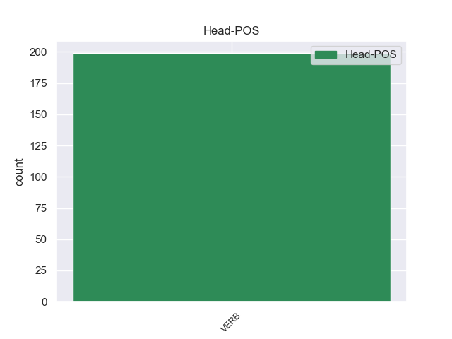
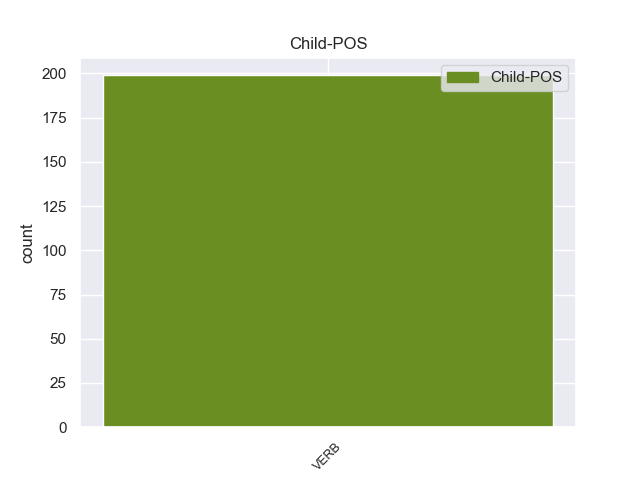

Distribution of features within this leaf



Morphosyntax Rules sorted by frequency.
- When the dependent token is the parataxis(parataxis) of the head token, and the head token is VERB and the dependent token is VERB, the Tense needs to be Pres.
1 Durante _ _ _ _ 0 _ _ _
2 la _ _ _ _ 0 _ _ _
3 staffetta _ _ _ _ 0 _ _ _
4 , _ _ _ _ 0 _ _ _
5 i _ _ _ _ 0 _ _ _
6 nuotatori _ _ _ _ 0 _ _ _
7 fanno fare VERB V Mood=Ind|Number=Plur|Person=3|Tense=Pres|VerbForm=Fin 0 _ _ _
8 una _ _ _ _ 0 _ _ _
9 squadra _ _ _ _ 0 _ _ _
10 di _ _ _ _ 0 _ _ _
11 4 _ _ _ _ 0 _ _ _
12 persone _ _ _ _ 0 _ _ _
13 : _ _ _ _ 0 _ _ _
14 ogni _ _ _ _ 0 _ _ _
15 nuotatore _ _ _ _ 0 _ _ _
16 nuota nuotare VERB V Mood=Ind|Number=Sing|Person=3|Tense=Pres|VerbForm=Fin 7 parataxis 7:parataxis _
17 solo _ _ _ _ 0 _ _ _
18 per _ _ _ _ 0 _ _ _
19 una _ _ _ _ 0 _ _ _
20 parte _ _ _ _ 0 _ _ _
21 di _ _ _ _ 0 _ _ _
22 il _ _ _ _ 0 _ _ _
23 percorso _ _ _ _ 0 _ _ _
24 di _ _ _ _ 0 _ _ _
25 gara _ _ _ _ 0 _ _ _
26 . _ _ _ _ 0 _ _ _
non-conforming Examples:
1 " _ _ _ _ 0 _ _ _
2 La _ _ _ _ 0 _ _ _
3 Sasea _ _ _ _ 0 _ _ _
4 - _ _ _ _ 0 _ _ _
5 ha _ _ _ _ 0 _ _ _
6 spiegato spiegare VERB V Gender=Masc|Number=Sing|Tense=Past|VerbForm=Part 22 parataxis 22:parataxis _
7 Fiorini _ _ _ _ 0 _ _ _
8 durante _ _ _ _ 0 _ _ _
9 una _ _ _ _ 0 _ _ _
10 di _ _ _ _ 0 _ _ _
11 le _ _ _ _ 0 _ _ _
12 prime _ _ _ _ 0 _ _ _
13 deposizioni _ _ _ _ 0 _ _ _
14 in _ _ _ _ 0 _ _ _
15 il _ _ _ _ 0 _ _ _
16 penitenziario _ _ _ _ 0 _ _ _
17 ginevrino _ _ _ _ 0 _ _ _
18 di _ _ _ _ 0 _ _ _
19 Champ _ _ _ _ 0 _ _ _
20 Dollon _ _ _ _ 0 _ _ _
21 - _ _ _ _ 0 _ _ _
22 entrò entrare VERB V Mood=Ind|Number=Sing|Person=3|Tense=Past|VerbForm=Fin 0 _ _ _
23 in _ _ _ _ 0 _ _ _
24 la _ _ _ _ 0 _ _ _
25 joint _ _ _ _ 0 _ _ _
26 venture _ _ _ _ 0 _ _ _
27 con _ _ _ _ 0 _ _ _
28 la _ _ _ _ 0 _ _ _
29 compagnia _ _ _ _ 0 _ _ _
30 petrolifera _ _ _ _ 0 _ _ _
31 libica _ _ _ _ 0 _ _ _
32 in _ _ _ _ 0 _ _ _
33 l' _ _ _ _ 0 _ _ _
34 estate _ _ _ _ 0 _ _ _
35 1990 _ _ _ _ 0 _ _ _
36 con _ _ _ _ 0 _ _ _
37 un _ _ _ _ 0 _ _ _
38 compito _ _ _ _ 0 _ _ _
39 preciso _ _ _ _ 0 _ _ _
40 : _ _ _ _ 0 _ _ _
1 " _ _ _ _ 0 _ _ _
2 Sono _ _ _ _ 0 _ _ _
3 stati _ _ _ _ 0 _ _ _
4 derubati derubare VERB V Gender=Masc|Number=Plur|Tense=Past|VerbForm=Part 0 _ _ _
5 e _ _ _ _ 0 _ _ _
6 poi _ _ _ _ 0 _ _ _
7 uccisi _ _ _ _ 0 _ _ _
8 None _ _ _ _ 0 _ _ _
9 , _ _ _ _ 0 _ _ _
10 ha _ _ _ _ 0 _ _ _
11 ribadito ribadire VERB V Gender=Masc|Number=Sing|Tense=Past|VerbForm=Part 4 parataxis 4:parataxis _
12 a _ _ _ _ 0 _ _ _
13 il _ _ _ _ 0 _ _ _
14 telefono _ _ _ _ 0 _ _ _
15 da _ _ _ _ 0 _ _ _
16 la _ _ _ _ 0 _ _ _
17 sede _ _ _ _ 0 _ _ _
18 di _ _ _ _ 0 _ _ _
19 Mondo _ _ _ _ 0 _ _ _
20 Giusto _ _ _ _ 0 _ _ _
21 a _ _ _ _ 0 _ _ _
22 Lecco _ _ _ _ 0 _ _ _
23 il _ _ _ _ 0 _ _ _
24 direttore _ _ _ _ 0 _ _ _
25 , _ _ _ _ 0 _ _ _
26 Domenico _ _ _ _ 0 _ _ _
27 Colombo _ _ _ _ 0 _ _ _
28 , _ _ _ _ 0 _ _ _
29 che _ _ _ _ 0 _ _ _
30 pure _ _ _ _ 0 _ _ _
31 ha _ _ _ _ 0 _ _ _
32 ammesso _ _ _ _ 0 _ _ _
33 di _ _ _ _ 0 _ _ _
34 non _ _ _ _ 0 _ _ _
35 essere _ _ _ _ 0 _ _ _
36 in _ _ _ _ 0 _ _ _
37 possesso _ _ _ _ 0 _ _ _
38 di _ _ _ _ 0 _ _ _
39 maggiori _ _ _ _ 0 _ _ _
40 dettagli _ _ _ _ 0 _ _ _
41 . _ _ _ _ 0 _ _ _
1 " _ _ _ _ 0 _ _ _
2 È _ _ _ _ 0 _ _ _
3 stata _ _ _ _ 0 _ _ _
4 un' _ _ _ _ 0 _ _ _
5 azione _ _ _ _ 0 _ _ _
6 scellerata _ _ _ _ 0 _ _ _
7 , _ _ _ _ 0 _ _ _
8 ma _ _ _ _ 0 _ _ _
9 invitar invitare VERB V VerbForm=Inf 0 _ _ _
10 la _ _ _ _ 0 _ _ _
11 in _ _ _ _ 0 _ _ _
12 Iran _ _ _ _ 0 _ _ _
13 e _ _ _ _ 0 _ _ _
14 dare _ _ _ _ 0 _ _ _
15 segni _ _ _ _ 0 _ _ _
16 di _ _ _ _ 0 _ _ _
17 tolleranza _ _ _ _ 0 _ _ _
18 in _ _ _ _ 0 _ _ _
19 i _ _ _ _ 0 _ _ _
20 confronti _ _ _ _ 0 _ _ _
21 di _ _ _ _ 0 _ _ _
22 la _ _ _ _ 0 _ _ _
23 cultura _ _ _ _ 0 _ _ _
24 cattolica _ _ _ _ 0 _ _ _
25 - _ _ _ _ 0 _ _ _
26 ha _ _ _ _ 0 _ _ _
27 detto dire VERB V Gender=Masc|Number=Sing|Tense=Past|VerbForm=Part 9 parataxis 9:parataxis _
28 il _ _ _ _ 0 _ _ _
29 deputato _ _ _ _ 0 _ _ _
30 azzurro _ _ _ _ 0 _ _ _
31 - _ _ _ _ 0 _ _ _
32 potrebbe _ _ _ _ 0 _ _ _
33 fare _ _ _ _ 0 _ _ _
34 cambiare _ _ _ _ 0 _ _ _
35 idea _ _ _ _ 0 _ _ _
36 a _ _ _ _ 0 _ _ _
37 l' _ _ _ _ 0 _ _ _
38 onorevole _ _ _ _ 0 _ _ _
39 Pivetti _ _ _ _ 0 _ _ _
40 , _ _ _ _ 0 _ _ _
41 che _ _ _ _ 0 _ _ _
42 è _ _ _ _ 0 _ _ _
43 una _ _ _ _ 0 _ _ _
44 ragazza _ _ _ _ 0 _ _ _
45 intelligente _ _ _ _ 0 _ _ _
46 " _ _ _ _ 0 _ _ _
47 . _ _ _ _ 0 _ _ _
1 " _ _ _ _ 0 _ _ _
2 Per _ _ _ _ 0 _ _ _
3 il _ _ _ _ 0 _ _ _
4 mondo _ _ _ _ 0 _ _ _
5 islamico _ _ _ _ 0 _ _ _
6 - _ _ _ _ 0 _ _ _
7 ha _ _ _ _ 0 _ _ _
8 constatato constatare VERB V Gender=Masc|Number=Sing|Tense=Past|VerbForm=Part 10 parataxis 10:parataxis _
9 - _ _ _ _ 0 _ _ _
10 restano restare VERB V Mood=Ind|Number=Plur|Person=3|Tense=Pres|VerbForm=Fin 0 _ _ _
11 come _ _ _ _ 0 _ _ _
12 punti _ _ _ _ 0 _ _ _
13 di _ _ _ _ 0 _ _ _
14 riferimento _ _ _ _ 0 _ _ _
15 personaggi _ _ _ _ 0 _ _ _
16 negativi _ _ _ _ 0 _ _ _
17 e _ _ _ _ 0 _ _ _
18 a _ _ _ _ 0 _ _ _
19 l' _ _ _ _ 0 _ _ _
20 opposto _ _ _ _ 0 _ _ _
21 di _ _ _ _ 0 _ _ _
22 Andreotti _ _ _ _ 0 _ _ _
23 , _ _ _ _ 0 _ _ _
24 come _ _ _ _ 0 _ _ _
25 appunto _ _ _ _ 0 _ _ _
26 la _ _ _ _ 0 _ _ _
27 Pivetti _ _ _ _ 0 _ _ _
28 . _ _ _ _ 0 _ _ _
1 a _ _ _ _ 0 _ _ _
2 il _ _ _ _ 0 _ _ _
3 momento _ _ _ _ 0 _ _ _
4 giusto _ _ _ _ 0 _ _ _
5 , _ _ _ _ 0 _ _ _
6 se _ _ _ _ 0 _ _ _
7 sarà _ _ _ _ 0 _ _ _
8 necessario _ _ _ _ 0 _ _ _
9 , _ _ _ _ 0 _ _ _
10 la _ _ _ _ 0 _ _ _
11 Lega _ _ _ _ 0 _ _ _
12 andrà andare VERB V Mood=Ind|Number=Sing|Person=3|Tense=Fut|VerbForm=Fin 0 _ _ _
13 a _ _ _ _ 0 _ _ _
14 casa _ _ _ _ 0 _ _ _
15 a _ _ _ _ 0 _ _ _
16 prender _ _ _ _ 0 _ _ _
17 li _ _ _ _ 0 _ _ _
18 , _ _ _ _ 0 _ _ _
19 li _ _ _ _ 0 _ _ _
20 abbiamo _ _ _ _ 0 _ _ _
21 già _ _ _ _ 0 _ _ _
22 cacciati cacciare VERB V Gender=Masc|Number=Plur|Tense=Past|VerbForm=Part 12 parataxis 12:parataxis _
23 i _ _ _ _ 0 _ _ _
24 fascisti _ _ _ _ 0 _ _ _
25 da _ _ _ _ 0 _ _ _
26 il _ _ _ _ 0 _ _ _
27 Nord _ _ _ _ 0 _ _ _
28 . _ _ _ _ 0 _ _ _